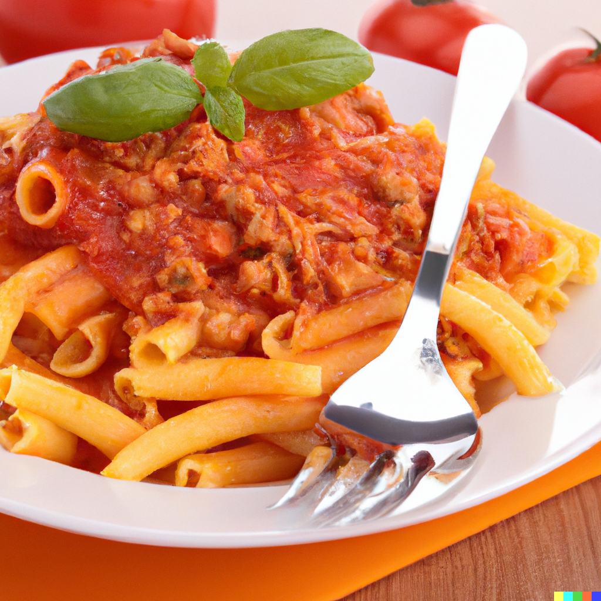

Découvrez nos pâtes chaudes 🍝
Prix : x €
-
Jambon crème blanche ou rouge

Savourez des pâtes délicieusement crémeuses avec un choix de crème blanche ou rouge.
-
Bolognaise
La classique sauce bolognaise, parfaite pour les amateurs de viande.
-
Bolo crème
Une fusion de bolognaise et de crème, pour une expérience unique.
-
Carbonara
Des pâtes carbonara traditionnelles, pour les amoureux du bacon et des œufs.
-
Pesto pistache
Un pesto riche en saveurs avec du parmesan, de la tomate et de la roquette, le tout agrémenté de pistaches.
-
Saumon épinards crème
Un mélange exquis de saumon, d'épinards et de crème, pour une touche d'élégance.
-
Végétarienne
Un choix de légumes frais avec la sauce de votre choix.
-
Arrabiata
Un mélange épicé de tomates, d'oignons et de lardons.
-
Patron
Des pâtes aux champignons, à la tomate et au poulet, pour un festin royal.
-
Lucifer
Un délice épicé avec des tomates piquantes, des oignons et du KFC piquant.
-
Curry lardons
Des pâtes au curry avec des lardons croustillants.
-
Poulet estragon crème
Des pâtes crémeuses au poulet et à l'estragon.
-
Diabolique
Un festin diaboliquement délicieux avec une sauce tomate piquante et des scampis.